Tempo perdido criando projetos
Gastar horas desenhando atrasa o orçamento e a fabricação.
Baixe agora mais de 3.000 projetos prontos de serralheria para copiar, fabricar e vender.
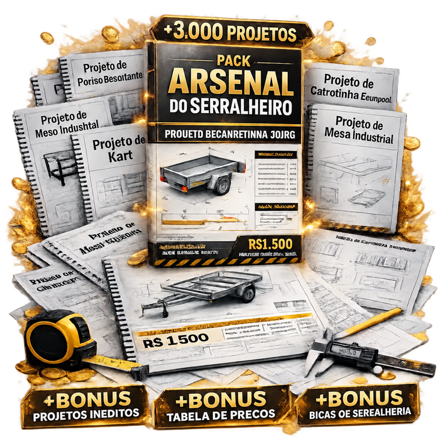
Tenha projetos de portões, carretinhas, móveis e estruturas prontos para consultar e adaptar aos seus serviços.
Escolha o modelo, confira as informações do projeto e prepare o próximo trabalho da sua oficina.
Pagamento único • Arquivos digitais • Garantia de 30 dias
O problema não é a falta de serviço, é falta de projeto certo.
Gastar horas desenhando atrasa o orçamento e a fabricação.
Sem modelos à mão, fica difícil escolher o próximo trabalho.
Organize os custos antes de definir quanto cobrar pelo serviço.
Tenha referências prontas para apresentar outras opções de peças.
Um pack digital com mais de 3.000 projetos prontos de serralheria para copiar, fabricar e vender.
Portões, carretinhas, móveis industriais, estruturas e outras peças organizadas por categoria. Você escolhe o projeto e consulta o material para preparar o serviço.
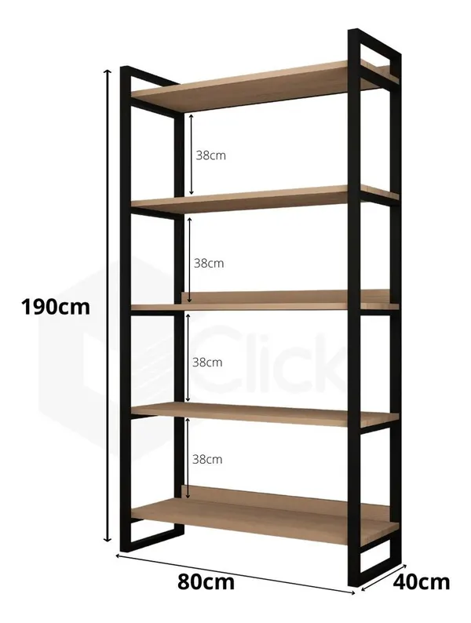
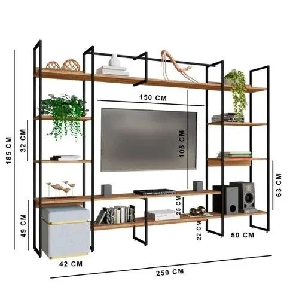
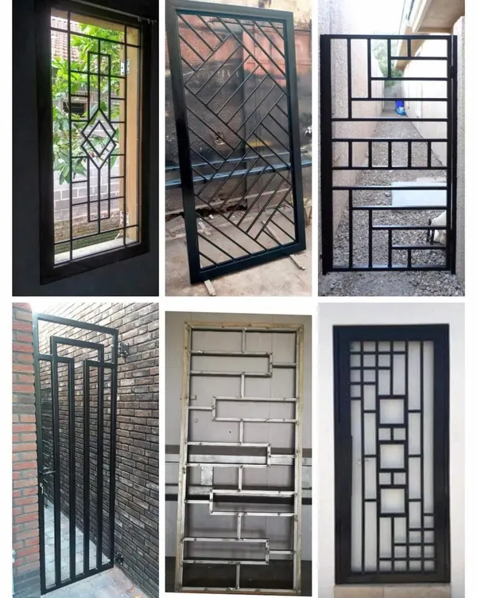
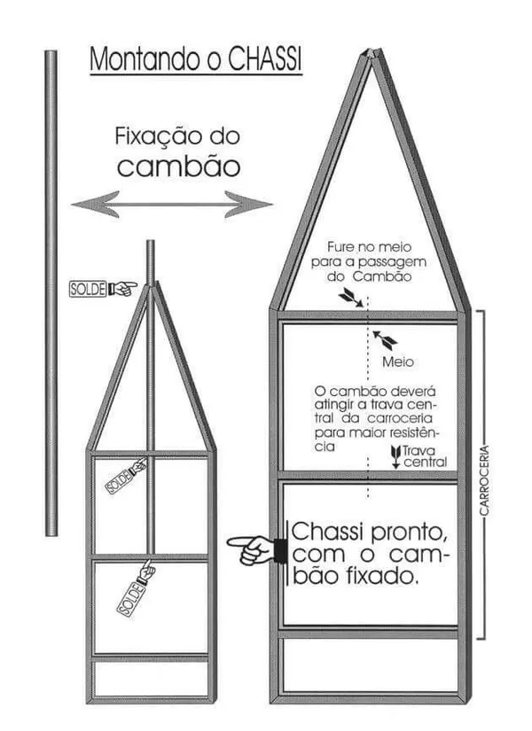
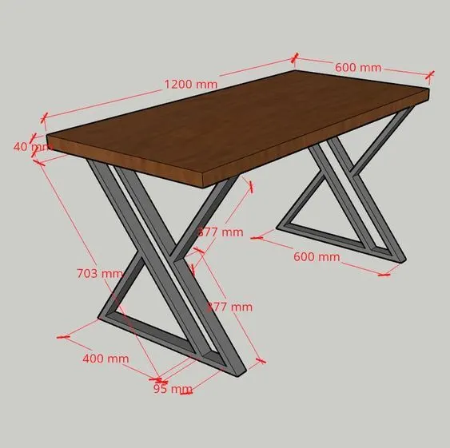
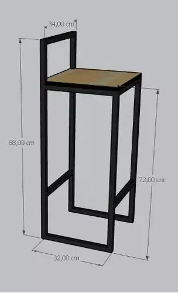
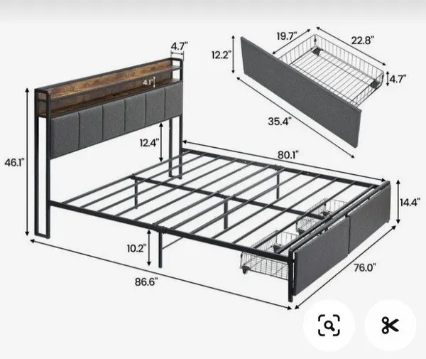
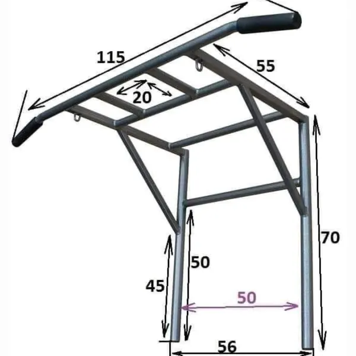
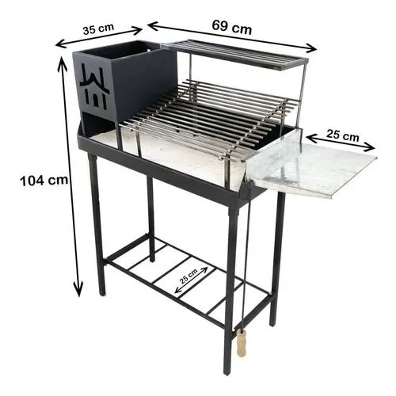
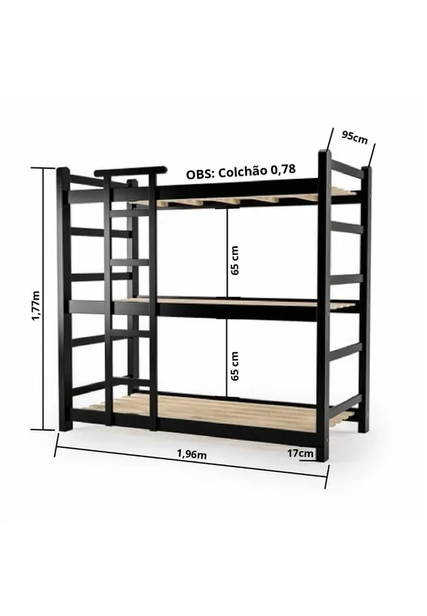
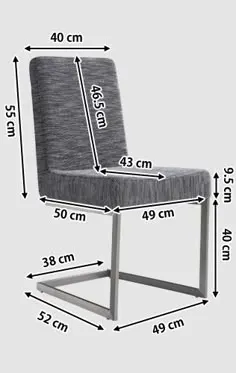
Consulte as informações de cada arquivo e ajuste os valores aos custos da sua região.
Organize materiais, mão de obra e despesas para montar cada orçamento.
Consulte contatos e categorias de insumos para comparar suas opções de compra.
Transforme o levantamento de custos em uma proposta de serviço.
Encontre opções de trabalhos para avaliar conforme a demanda da sua região.
Uma compra. Seu material de consulta sempre à mão.
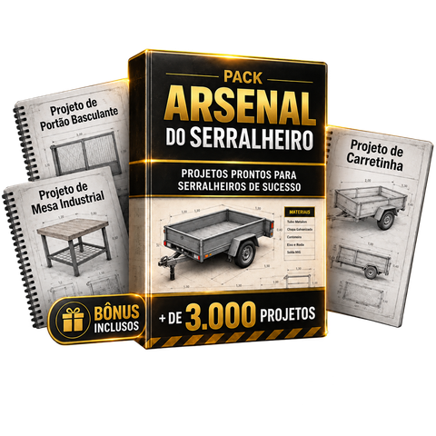
O acesso é liberado após a confirmação do pagamento.
Use um e-mail válido na compra para receber as instruções.
Você tem 30 dias após a compra para avaliar o material.
Se não ficar satisfeito, solicite o reembolso dentro desse prazo pelo canal de atendimento informado nas instruções de acesso.
As formas de pagamento disponíveis aparecem no checkout antes de você concluir a compra.
Após a confirmação do pagamento, as instruções de acesso são enviadas ao e-mail informado na compra. Confira também as pastas de spam e promoções.
O Básico oferece a seleção de entrada. O Profissional inclui uma seleção ampliada e os quatro materiais de apoio. Confira a lista de cada plano acima.
A oferta é de pagamento único, com acesso aos arquivos adquiridos, sem cobrança recorrente.
Você tem 30 dias após a compra para avaliar o material e solicitar reembolso. Use o canal de atendimento informado nas instruções da compra.